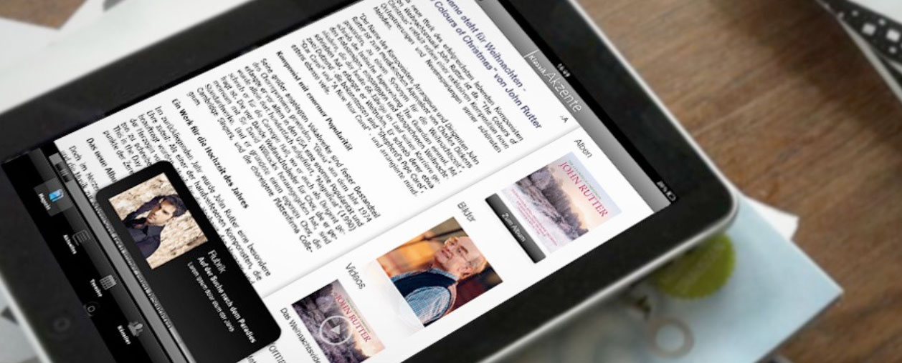
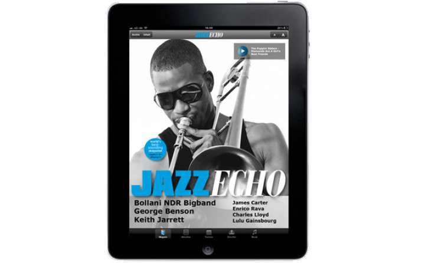
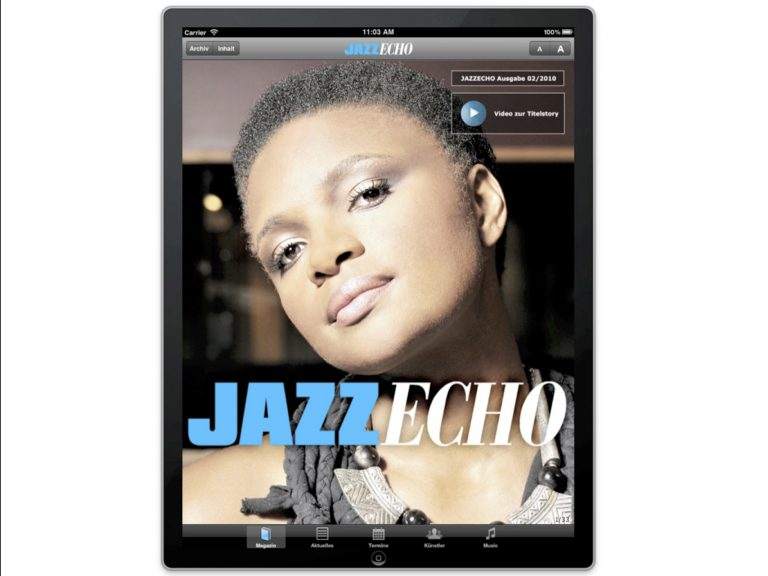
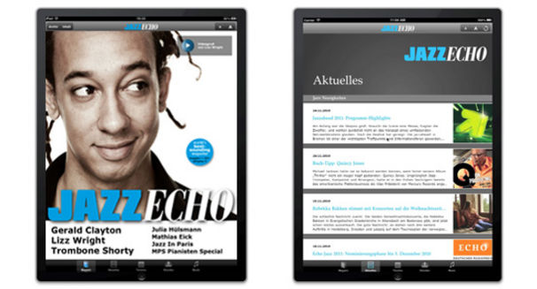

Aus dem Print-Magazin der Jazz-Abteilung von Universal Music habe ich eine iPad-App entwickelt: das vierteljährliche Magazin plus eine große Musikdatenbank mit Künstlern, News, Neuerscheinungen (inkl. Hörproben), Videos und Terminen. Direkte iTunes-Verknüpfungen sorgten für zusätzliche Download-Verkäufe, eine Anbindung an das CMS von Universal Music für einfache Aktualisierung.



30 Minuten, unverbindlich — ich schaue mir Ihre Ausgangslage an und sage ehrlich, ob und wie ich helfen kann.